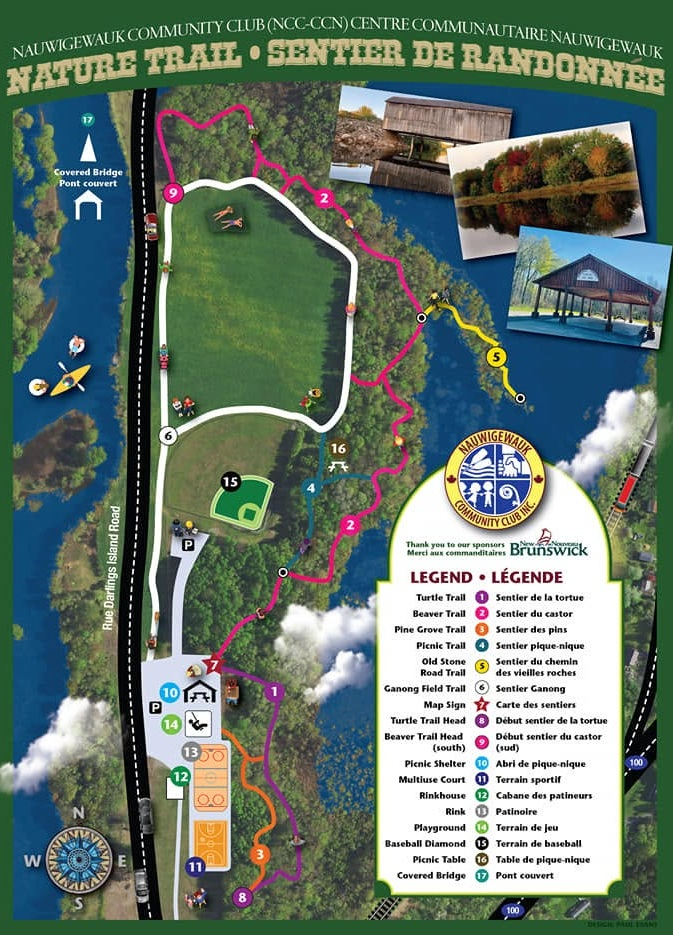

Walk through the natural landscape of the Hammond River area — free and open to all.
The Nauwigewauk Community Club grounds include a network of six named trails winding through the natural landscape along the Hammond River — from open field paths to shaded pine groves.
"A quiet path through some of the most beautiful natural scenery in New Brunswick."
The trails are maintained by volunteers from the Community Club and are free to use year-round. Whether you're looking for a peaceful morning walk or a family outing, the network connects the picnic shelter, playground, ball diamond, and the historic covered bridge.

Official trail map — Turtle, Beaver, Pine Grove, Picnic, Old Stone Road, and Ganong Field trails
Wildflowers emerge along the trail as the forest wakes up after the New Brunswick winter.
Full canopy shade makes the trail a cool retreat on warm summer days. Watch for local wildlife.
Peak season — brilliant fall foliage transforms the trail into a stunning display of colour.
A peaceful winter walk through snow-covered trees. Trails may be icy or slippery in cold weather — please wear appropriate footwear and come prepared.
Stay on the marked trail to protect the natural environment and surrounding vegetation.
Pack out what you pack in. Please take your litter with you and leave the trail clean for others.
Dogs are welcome but must be kept on a leash at all times out of respect for wildlife and other trail users.
Respect the natural habitat — do not disturb wildlife, pick plants, or remove anything from the trail area.
Trail use is at your own risk. Please be mindful of conditions, especially in wet or icy weather.
Report any trail hazards or maintenance needs to the Club executive so we can address them promptly.